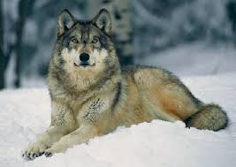
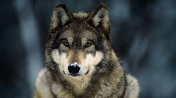

O Vukovima
Osobine
Veličina i masa vukova variraju, usled velike površine areala i naseljavanja različitih staništa.
- Najveći vukovi dosežu dužinu tela do 170 cm, a rep je dugačak još do 62 cm.
- U ramenima je visok oko 105 cm a mogu doseći težinu do 160 kg.
- Najmanji vukovi žive na Bliskom istoku i na Arabijskom poluostrvu.
- Dužina tela im je oko 80 cm, težina 20 kg a rep je dug oko 29 cm.

Oblasti koje nastanjuje
Vukovi žive u velikom broju najrazličitijih mesta.
- Zahvaljujući svojoj velikoj prilagodljivosti, uspevaju da žive i u ledenim područjima Grenlanda i Arktika, kao i u pustinjama Severne Amerike i Centralne Azije.
- Većina vukova nastanjuje travnata područja i šume.
- Danas je poznat pre svega kao šumska životinja, ali to je posledica činjenice da ga je čovek vrlo davno potisnuo s otvorenih područja.
